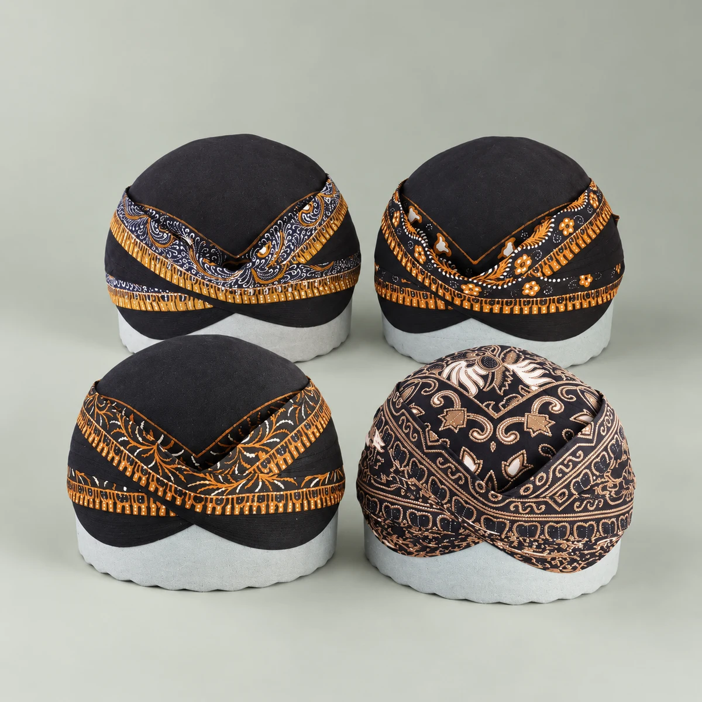
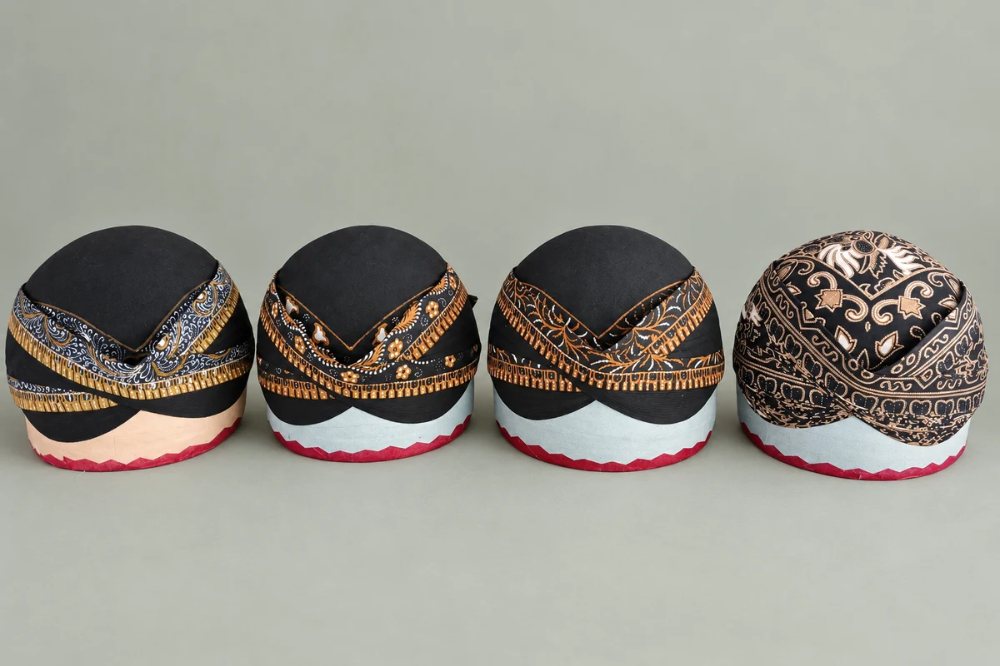

Blangkon
Alusan, dijahit sepenuhnya. Pilihan batik cap, kombinasi tulis, batik tulis, dan jumputan.
Mulai Rp220.000NETES BATIK · SEJAK 2014
Tanpa lem. Bisa dilipat, bisa dicuci. Pilih blangkon, jarik, dan surjan untuk melengkapi busana Jawa Anda.

Mulai dari blangkon, lalu lengkapi dengan jarik dan surjan. Tanyakan pilihan yang tersedia sebelum memesan.

Kisaran harga blangkon sebagai panduan awal. Harga akhir mengikuti motif dan jenis yang Anda pilih.
Sebagian besar blangkon batik tulis berada di kisaran Rp450.000–500.000. Blangkon batik cap mulai Rp220.000 termasuk gratis ongkir di Jawa; konfirmasi ketentuannya saat memesan.
Tanyakan harga terbaruCERITA NETES BATIK
Pada 25 Desember 2014, Netes Batik memulai usaha dengan tiga jarik dan berjualan melalui Facebook. Pesanan pertama datang, lalu usaha ini terus berjalan.
Kini blangkon menjadi produk utama kami. Pemilik menangani usaha secara langsung, dari bahan hingga produksi bersama perajin sendiri. Pilihan produk dibagikan melalui Instagram dan WhatsApp, lalu pesanan dibicarakan satu per satu.
Produk Netes Batik telah sampai ke Jepang, Hong Kong, dan Abu Dhabi dalam konteks KBRI.
Blangkon, jarik, atau surjan? Pilih produk yang ingin Anda tanyakan.
Minta foto motif, pilihan ukuran, harga, dan ketersediaan langsung kepada kami.
Konfirmasi detail produk, pembayaran, dan pengiriman sebelum melanjutkan pesanan.
Ketersediaan motif dan ukuran berubah. Beberapa pilihan perlu menunggu produksi. Tanyakan stok dan perkiraan waktu melalui WhatsApp sebelum memesan.
Blangkon alusan kami dijahit sepenuhnya tanpa lem, bisa dilipat, dan bisa dicuci. Tersedia berbagai motif, jenis, dan ukuran.
Minta foto motif dan pilihan ukuran yang tersedia melalui WhatsApp. Konfirmasikan ukuran sebelum memesan agar pilihan sesuai kebutuhan Anda.
Ya, blangkon Netes Batik bisa dicuci. Tanyakan cara perawatan yang sesuai dengan kain pilihan Anda saat memesan.
Blangkon batik cap mulai Rp220.000 termasuk gratis ongkir di Jawa. Untuk produk lain, alamat di luar Jawa, atau pesanan internasional, konfirmasikan layanan dan biaya pengiriman melalui WhatsApp.
Setelah motif, ukuran, dan stok dikonfirmasi, tanyakan metode pembayaran langsung melalui WhatsApp. Pastikan rincian pesanan dan total biaya sudah disepakati.
MARI TEMUKAN PILIHAN ANDA
Kirim pesan. Kami bantu cek motif, ukuran, dan stok yang tersedia.
Tanya stok via WhatsApp +62 877-3821-2840